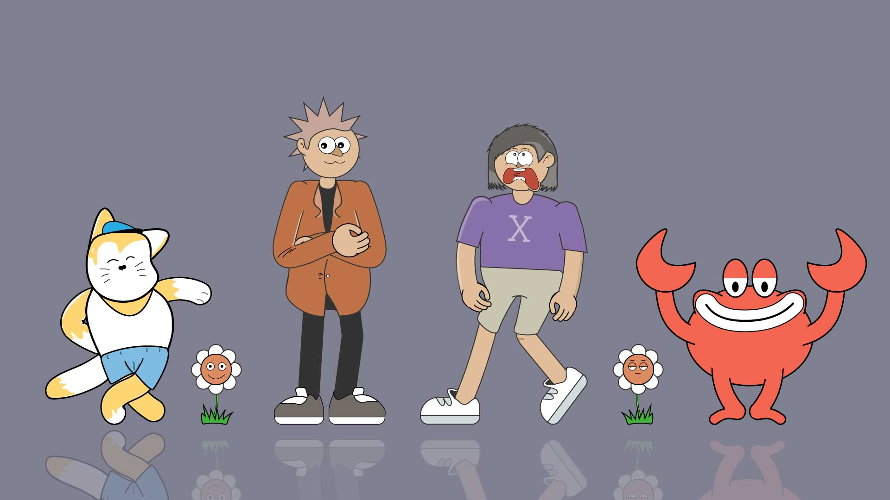
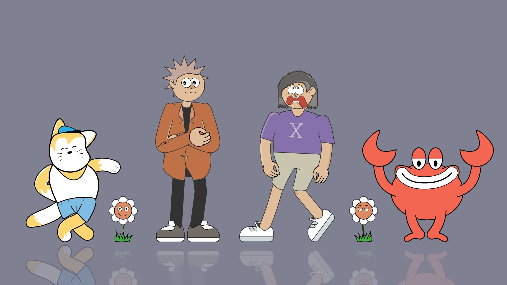

Pixel Design
In pixel output create by photoshop, usually i’m often used Retro characteristic with combination gradient colour in the background, after that cropping raw-raw asset from the internet and mix with typography optimatilization. So it’s makes the output clean, simple and easy for people to read.
Vector Design
In vector content create by Illustrator, usually i’m often create raw 2D character with take inspiration from pinterest, then combine my character asset with pallete colour as background and typography optimatilization.
 



Motion Graphic
To make a motion graphic content, I’m always using After Effect with material asset who i create in Premierre pro for cinematic, Illustrator for vector, and photoshop for pixel. If neccesary, depends on situations, sometime i’m using 3rd party from plugin and also recreate assets from the bundle to save a time and make my work more faster.
UI/UX Web Design
To create interactive website, regardless web app or just landing page, you need a specifics tools. In my case, i’m using figma for raw structure and visual design, including wireframe, pattern, and navigate structure. Then for the next step, i’m using HTML CSS and javascript for programming design. So for example, here a protoype i working recently.
About Narasihistorian
Narasihistorian is history content blog, create by owner who graduate in international relations degree and have passion about history, especially on global context, He trying to share his passion about history with interactive aproach and visual pleasing with high quallity video content and web through article. Click to see Narasihistorian web and also Narasihistorian design process


About My Biography
This is my second personal website. The goal i recreate my second personal website, just try explore new scope in the web development and also to diversity my style. In this project i'm using next js and styling with tailwindCSS, while in visual design, i'm using vector style and also mobile app layout. Click and see My Biography web and also My Biography design process